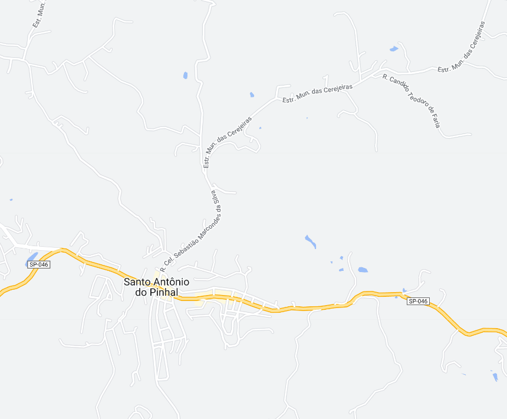
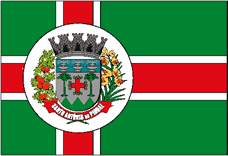

Santo Antônio do Pinhal - Geodex


Município de Santo Antônio do Pinhal
-
Populacão: 6.843 pessoas
-
Área: 133,008km²
-
Fundação: 26 de Janeiro de 1960
-
Distância da Capital: 160km
Santo Antônio do Pinhal é uma cidade localizada na Serra da Mantiqueira, no estado de São Paulo. Fundada em 26 de Janeiro de 1960, a cidade é conhecida por sua bela paisagem natural, com montanhas, cachoeiras e trilhas, tornando-se um destino popular para o ecoturismo e o turismo de aventura. Além disso, Santo Antônio do Pinhal possui um clima ameno e agradável, com temperaturas mais baixas durante o inverno, atraindo visitantes em busca de tranquilidade e contato com a natureza. A cidade também conta com uma rica cultura, preservando tradições como a Festa do Pinhão, com comidas típicas e apresentações culturais.